Assignment 1: This assignment is based on materials contained in the slide decks and labs in the first 4 topics, namely, Introduction to Java programming language, Analysis & refactoring class, Object Interaction and Grouping Objects.
Starter code is available to download at the beginning of each question.
We suggest you create a folder name assignment-1 (within a sub-folder assignments) into which you download the starter code. Your directory structure might be as depicted in Figure 1.
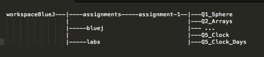
Starter code is available here.
Develop a Sphere class with the following Application Programming Interface (API):
public Sphere() // set the default value of the radius to 10.0
public Sphere(double radius)
public double surfaceArea() // surface area of sphere
public double volume() // the volume of sphere
public double greatCircle() // circumference of great circle
public void changeSize(double radius) // facilitates radius reset
public int getNumberSpheres(); // number of Sphere objects createdYou are requested to fully implement the above methods.
Do not introduce any of the graphics methods present in the BlueJ classes that we encountered in the labs.
Use package private access control for instance and class variables.
One instance variable is required, the radius of the sphere:
double radius;Use a class variable to maintain a count of the number of Sphere objects created.
static int numberSpheres;Avoid code duplication in the constructors by implementing and invoking a private method setState:
private void setState(double radius)Do not rely on the default values of primitive variables. Instead, where necessary, set them equal to a specific value of your choosing.
Apply style and documentation matching the accompanying Cone class provided.
Use the Math library to evaluate geometric formulae:
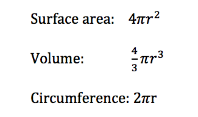
Enforce a condition rendering it impossible for a user to successfully input a negative number as an argument (actual parameter).
private boolean isValid(double value)The method TestSphere.testAll() should generate output as shown in Figure 2.
TestSphere will not compile until Sphere has been fully implemented.
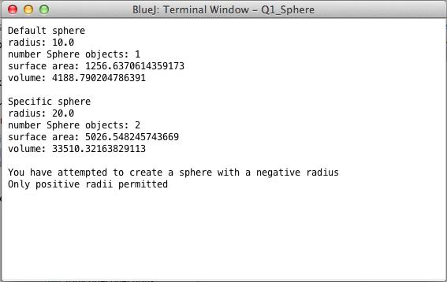
Starter code is available here.
Open the DemoArray class in the arrays project.
In the default constructor:
Write a method demoArray in which you:
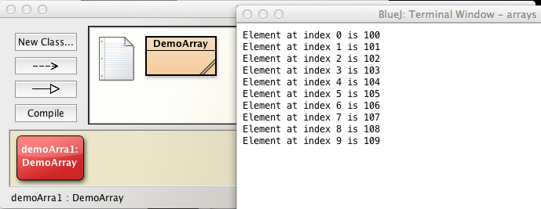
Write a method demoArray2 in which you:
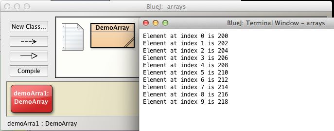
Write a method demoArray3 in which you:
Write a method demoArray4 in which you:
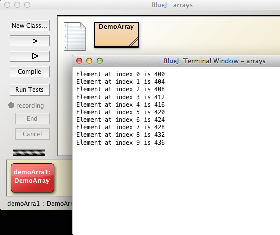
Develop a method to create an array of even integers within a given range. Iterate the array and calculate and print the sum of its contents.
The method header is:
public void sumEven(int low, int hi)
Summary of steps:
Message: Please enter even arguments
Declare and allocate memory to array of int type
In a loop, initialize the array with even numbers in range [lo, hi]
In a second loop. accessing the above array, calculate the cumulative sum of the even numbers.
You should complete this expression and locate at end of sumEven so as to achieve the output corresponding to that at the end of Figure 5.
System.out.println("\nSum even numbers from " ...." inclusive is " + sum);Here is the complete output including that for the method sumEven with parameters (0, 10).
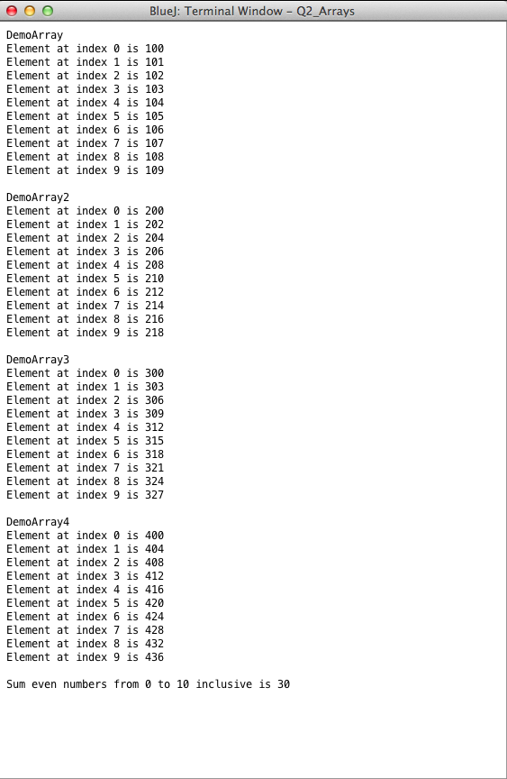
Here you are asked to develop a small suite of classes: Library, Librarian and Book.
Starter code is available here.
Develop a Book class with the following API:
public Book(String title, String author, int numberPages, String isbn)
public void borrow() // borrow a book
public boolean isBorrowed() // is book on loan?
public void returns() // return book
public String loanStatus() // print a message
public void printDetails() // print details re book
public String getTitle() // return book titleHere is the list of fields:
String title
String author
String isbn
int numberPages
boolean borrowed
int numberBorrowingsAssume that the book resides in a library. The method borrow facilitates borrowing the book:
The method loanStatus should return a String as follows:
The required output on invoking printDetails is shown in Figure 1 for a sample book. It is important to align the output as illustrated.
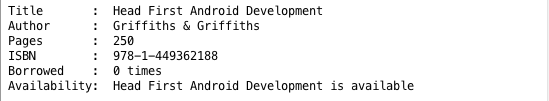
Now write a simple Library class in which to store books. Here is its API:
public void add(Book book)
public int numberBooks()
public String loanStatus(Book book)
public String hasBook(Book book)
public boolean removeBook(Book book)
public void removeAllBooks()
public void printDetailsAll() // print details all books in libraryThe books are stored in a list:
ArrayList<Book> books;Finally, create a Librarian class. Use this to test the Book and Library classes.
Here is the API:
public Librarian()
public void unitTest()And here is the entire class:
public class Librarian
{
Library library;
public Librarian()
{
library = new Library();
}
public void unitTest()
{
// Create a set of 4 books books
Book book1 = new Book("Objects First with Java", "Barnes & Kolling", 250, "978-0-13-249266-9");
Book book2 = new Book("Head First Android Development","Griffiths & Griffiths", 250, "978-1-449362188");
Book book3 = new Book("Learning Android", "Gargenta & Nakamura", 600, "978-1-449-31923-6");
Book book4 = new Book("Android Programming", "Phillips & Hardy", 500, "978-0-321804334");
// Add to library
library.add(book1);
library.add(book2);
library.add(book3);
library.add(book4);
//library.add(book4);
// Borrow and return
book1.borrow();
book1.returns();
book1.borrow();
// Print details & output number books
System.out.println("Adding 4 books to library");
library.printDetailsAll();
System.out.println("Number books in library is " + library.numberBooks());
// Remove a book, verify book no longer in library
System.out.println("Removing a book from library stock");
library.removeBook(book4);
System.out.println("Number books in library is " + library.numberBooks());
System.out.println(library.hasBook(book4));
library.printDetailsAll();
// Restore book
System.out.println("Putting back the book we removed");
library.add(book4);
System.out.println(library.hasBook(book4));
System.out.println("Number books in library is " + library.numberBooks());
// Remove all books and verify library empty
System.out.println("Austerity bites. Shutting down library. Selling off all books");
library.removeAllBooks();
System.out.println("Number books in library is " + library.numberBooks());
}
}You are expected to obtain output matching that in Figure 2 when you invoke the Librarian.unitTest method.
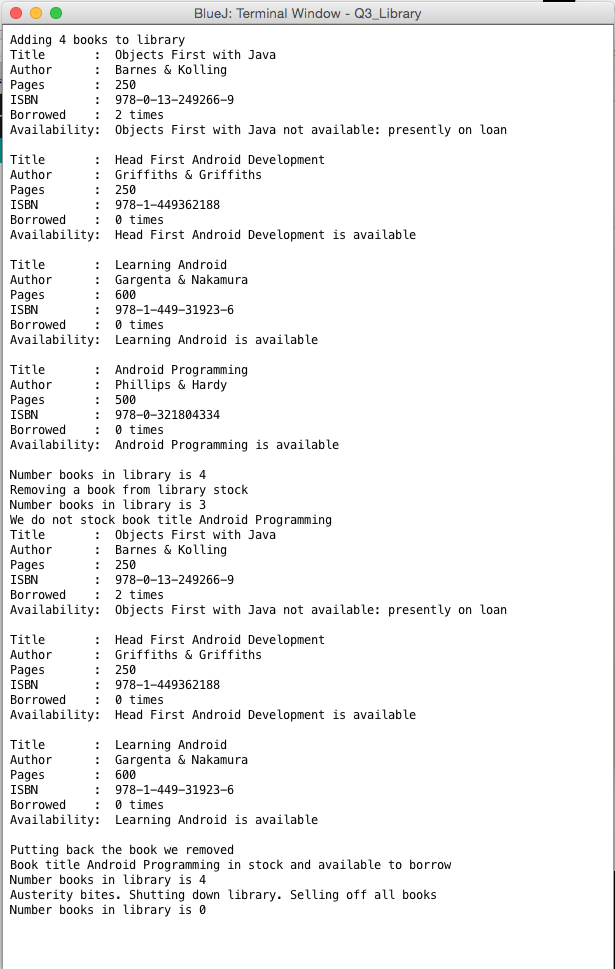
This questions relates to the String class.
Starter code is available here.
Open ICTStrings class:
isEqual:
isEqualIgnoreCase:
hasPrefix
length
toUpper
endsWith
subString
reverse 1
reverse 2
reverse 3
isPalindrome
String s = ...;
s.replaceAll("[^a-zA-Z]", "");A test class TestICTStrings that includes test data is provided to facilitate testing of the methods above (See Figure 1).
The indicative test results are shown in Figure 2.
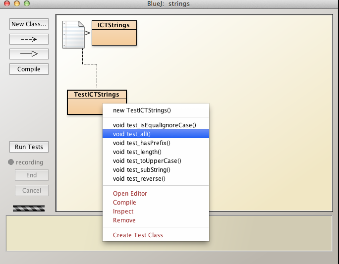
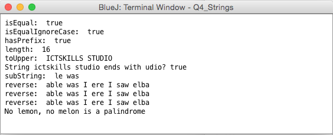
This question requires that you modify the 24-hour clock we encountered in the labs.
There are two parts to this question. The first part requires modifying the starter code to produce a clock displaying hours, minutes and seconds.
The second part requires that you add days to the display. This is discussed at the end of this step.
Starter code is available here for both parts of the question: Q5_Clock and Q5_Clock_Days.
Figure 2 represents the upgraded clock, the goal of part 1 of this question.
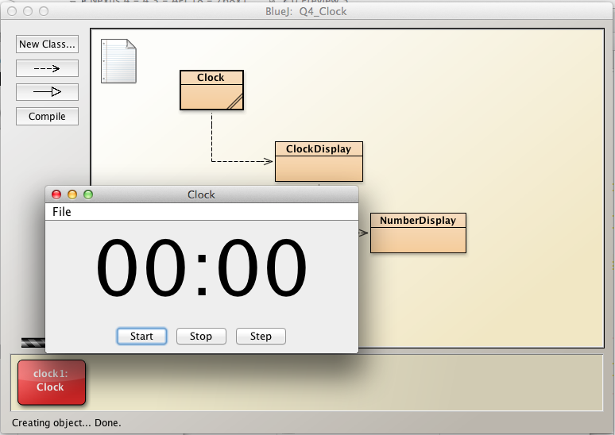
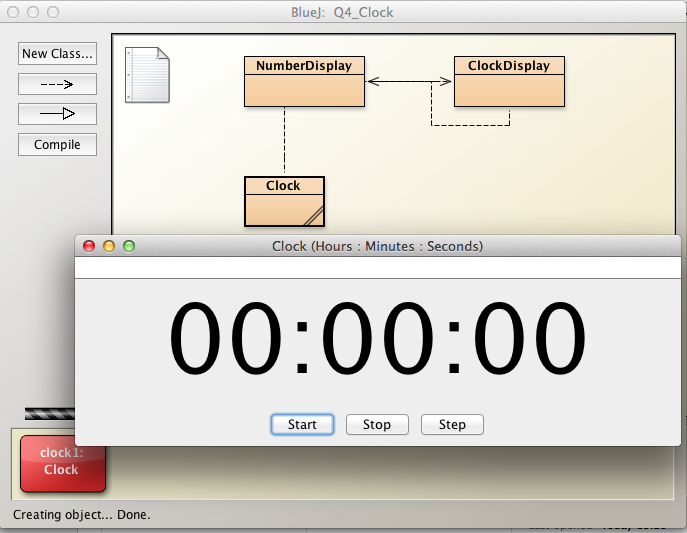
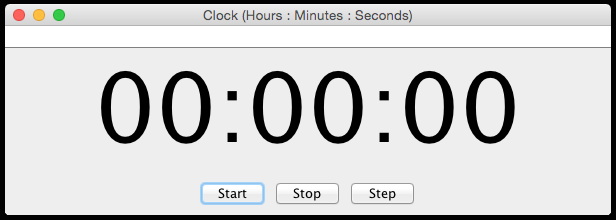
In Clock:
public void resetSeconds(int value)
public void resetMinutes(int value)
public void resetHours(int value)It will be necessary to make some changes to provide the upgraded display as indicated in Figures 4 and 5.
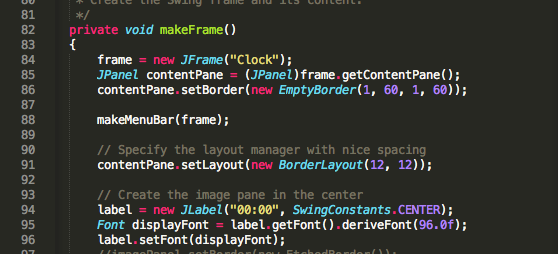 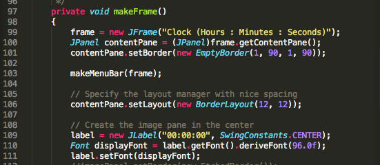
In ClockDisplay:
public void resetSeconds(int value)
public void resetMinutes(int value)
public void resetHours(int value)The purpose of these methods is to facilitate testing. For example, when you have completed the refactoring:
Assume all years have 365 days.
Unlike in part 1, in this part it will be necessary to modify the NumberDisplay class so that leading zeroes are displayed for the day component. The NumberDisplay in the starter code caters only for 2 digits.
The clock is shown below in Figure 6.
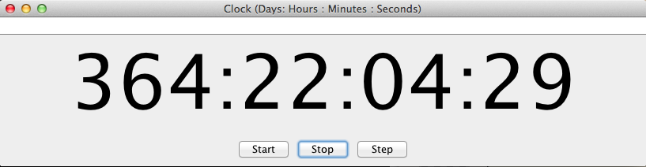